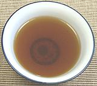

|
CG Crab DipUSA - California | ||||
| Makes: Effort: Sched: DoAhead: |
6 oz * 10 min Yes |
Whole crabs and crab legs and claws are generally eaten with some sort of dip. The famous Joe's Stone Crab restaurant provides a Mustard Sauce which I find completely swamps the flavor of the crab (and is high calorie).Some provide just melted butter and some lemon wedges which is much better. Some provide just vinegar and I like good vinegar, but straight it's a little too vinegary for crab. Here's our dip which tones down the vinegar and provides a touch of spices - and you can still taste the crab! | |||
|
|
1/4 1/2 1/8 |
c c t |
Sherry Vinegar White Wine, dry CG Bay Seasoning (1) or Old Bay Seasoning |
Make - (10 min)
|